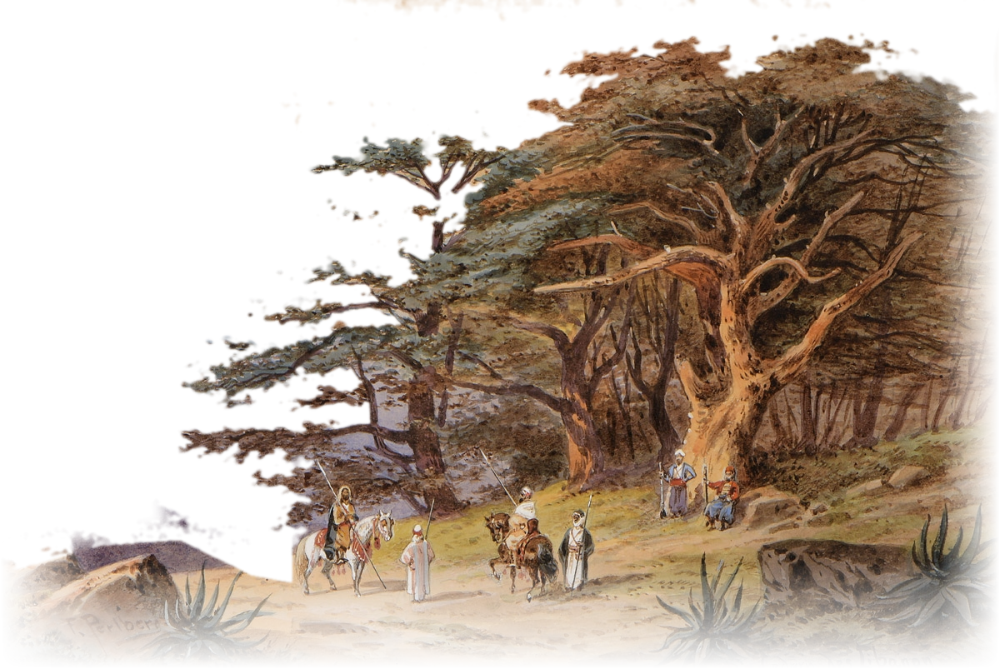
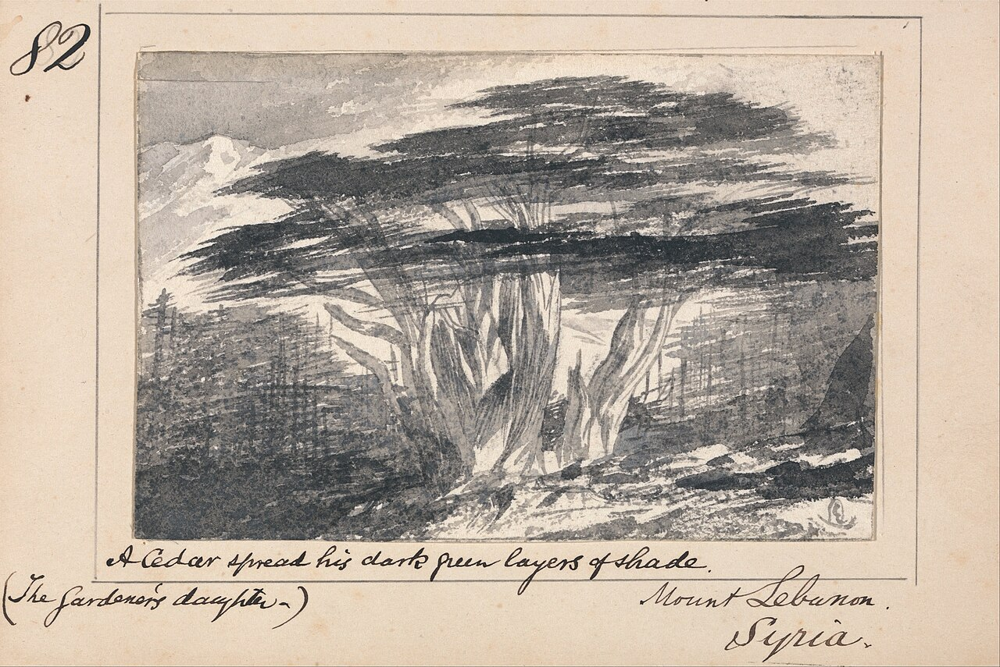

Traditional Lebanese food أكل لبناني
Find the dish. Then find who makes it right.
Every mezze, grill and sweet worth crossing Lebanon for: what is in it, how to eat it, and the places that still make it the way Teta did.
The Cedars of Lebanon, Friedrich Perlberg, watercolour, before 1921. Public domain

Four ways in من وين نبلّش
Where would you like to start?
New here?
Eight dishes almost everyone loves, the diets they fit, and how to eat a mezze.
Start with the basics →Every dish
The whole table, with filters for vegan, gluten-free, no nuts, no sesame and more.
See the dishes →The road trip
Six towns from the coast to the Beqaa, and the plate to order in each of them.
Take the road →Traditions
The morning furn, coffee for every guest, the mouneh kept for winter, the feast-day sweets.
Read the customs →
Sahtein! صحتين
"To your health": say it before you start eating. The answer is 'Ala albak, "on your heart".
Learn the words for the table